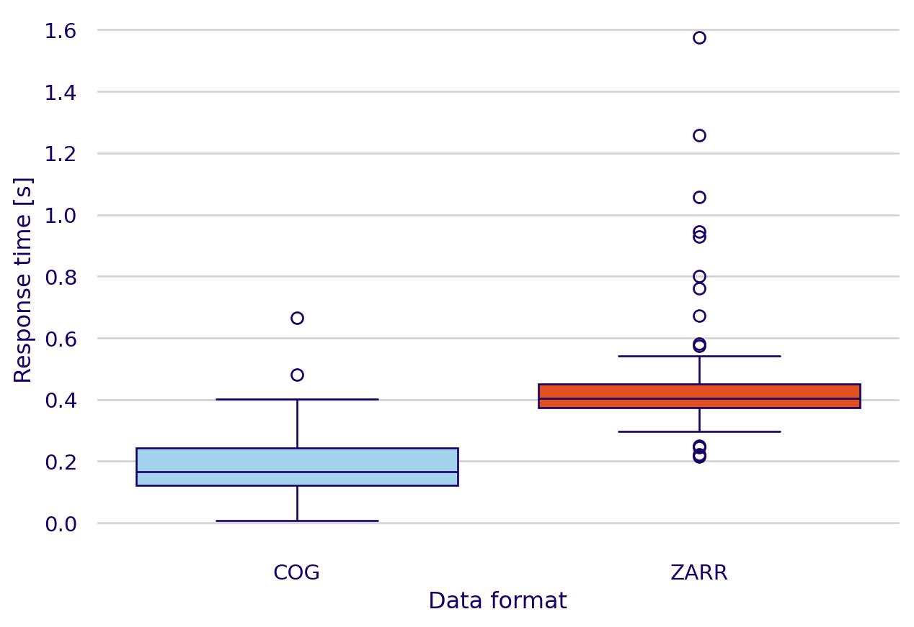
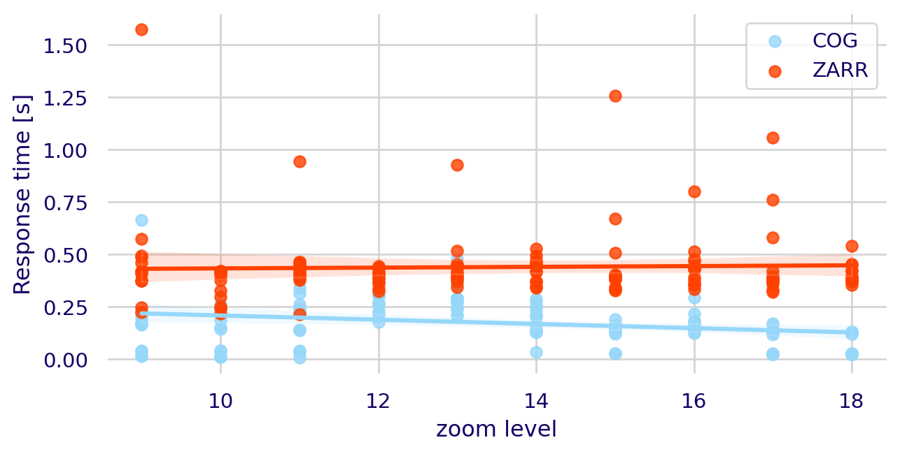

Make this Notebook Trusted to load map: File -> Trust Notebook
Baseline scenario
Current workflow
One of the main findings of the interviews was the process followed currently to discover, retrieve and visualize data. These steps are summarized on Figure 1 and show how complex and time consuming these tasks can be for a Satelligence employee nowadays. Moreover, the steps followed were categorized in four classes depending on how much time is generally spent carrying it out.

According to Figure 1, some of the most time-consuming tasks were searching for data on Google Cloud Storage and downloading it for visualization. Additionally, seeking advice from colleagues about the dataset’s location added a major uncertainty to the time estimates, as responses varied from very quick to considerably delayed or non existent.
Thematic Content Analysis
When asked about the recurrent patterns on the interviews undertaken to define the baseline scenario, ChatGPT found four main topics:
- There is a high uncertainty on the location of datasets and a high dependency on colleagues to find them.
- Multiple sources and locations of data.
- Data familiarity helps users locate data more quickly.
- Use of specific tools and methods for different datasets.
After some refinement and a deeper analysis of the interviews, the major pitfalls found on the process of data discovery and visualization in the company were summarized as follows:
- High dependency on colleagues for dataset location.
- Disorganized structure of Google Storage Buckets.
- Data familiarity helps users locate data more quickly.
- Locating data is dependent on recurrent work with a specific dataset.
- Not intuitive naming of repositories with datasets.
- Understanding of diverse tools to access different data is currently necessary.
- Download of data is required in most cases to visualize it.
- Not one place where all existing data can be found.
All of these pitfalls highlight the need for a simpler data discovery implementation, where data visualization can also be integrated seamlessly. Previous studies have found that key difficulties for earth observation data discovery include heterogeneous query interfaces, and use of diverse metadata models [@miranda_espinosa_reviewing_2020]. To address these challenges, the approach should enable easy access to datasets based on specific queries, ensuring that users can efficiently locate and utilize the data they need. By harmonizing metadata standards and query protocols, the process of data discovery can be greatly improved, making it more accessible and user-friendly.
Service integration
The integration of the services deployed resulted in a version of STAC Browser including three different collections containing datasets related to the forest baseline created by the company, elevation data from third party organizations and a collection for the comparison of COG and Zarr data. The web application can be accessed in https://eoapi.satelligence.com/browser.
Effective integration
The effective integration was not an easy task and involved multiple aspects, ranging from editing data formats to facilitate their visualization, transitioning from a static to a dynamic catalog, customizing APIs, and finalizing with the correct deployment of the services.
Data formats
An essential step related to data formats was the edition of Zarr datasets to achieve their optimal visualization. This edition involved creating a series of overviews of the same dataset at different resolutions. Specifically, this was accomplished by converting COGs into multiple Zarr files resampled at various spatial resolutions. These resampled Zarr files, acting as overviews enhance visualization by allowing the appropriate resolution to be accessed based on the map scale, similar to the approach used when visualizing COGs [@lynnes_cloud_2020]. Even though the approach followed in this study allowed for improved visualization of Zarr files, the creation of Zarr pyramids in a more optimized way is still necessary. Other researchers have been focusing their efforts on this task to enhance the efficiency and effectiveness of the process [@Barciauskas_NextGen_2024].
Leverage of APIs
To effectively query the datasets stored in the catalog, a transition from a static to a dynamic catalog (i.e. a STAC API) was needed. This shift was facilitated by the deployment of a STAC API within the eoAPI framework. The STAC API facilitated the querying capabilities of the datasets stored in the catalog by dynamically requesting datasets based on their metadata. This dynamic setup not only facilitated data discovery but also enabled the use of additional tools such as the STAC API QGIS plugin. The plugin could simplify the process of data discovery and its direct manipulation.
For the visualization of Zarr datasets, it was necessary to customize the TiTiler-Xarray API to accommodate the new Zarr pyramid structure. This customization involved overwriting a series of functions in the main code of the application to align with the newly created Zarr pyramids. By adapting the API to handle the specific requirements of the Zarr format and its multi-resolution overviews, the visualization process was optimized.
Deployment
As described on ?@sec-eoapi, the deployment of both eoAPI and the additional services utilized was perform using Google Kubernetes Engine (GKE), which is K8s’ GCP service. In a GKE cluster, the setup of complex multi-service applications that connect to each other with an internal network is simplified [@gupta_deployment_2021]. Moreover, eoAPI simplified the deployment by providing a guide for deployment that used a Helm chart. A Helm chart is a collection of files that describe the K8s related resources needed to run a multi-service application and it can improve the speed of deployment by a factor of up to 6 times [@gokhale_creating_2021]. These factors greatly influenced the decision of deploying the whole suite of services in eoAPI.
Moreover, the performance of some of the eoAPI services deployed using K8s had been already assessed by previous studies. For instance, @munteanu_performance_2024 performed tests on a deployed version of STAC API that, like the deployment performed in this study, used PgSTAC as the backend. These authors deployed a dynamic STAC API loaded with the metadata of approximately 2.3 TB of spatial data on a K8s cluster and evaluated the performance by assessing both the response times and resources used in a hypothetical scenario where 7,000 users would perform requests simultaneously. Their results showed that these services are capable of supporting effectively a much larger amount of users than the estimated by Satelligence.
Finally, additional to the already covered advantages, the deployment of eoAPI and the fast community driven development of new tools brings with it benefits that could become very important for S11’s workflow. For instance, the visualization of vector data using TiPg is a service included in the eoAPI deployment that wasn’t used during this internship, but should certainly be integrated in the near future by the company to visualize their supply chain datasets. Moroever, the community adopting STAC specifications has been growing fast. Due to this, a big series of STAC-extensions have been developed to fulfill the requirements of the users. During this internship, extensions to add additional metadata were included, however, due to time constraints other extensions that could prove beneficial for the company were not integrated. Specifically, the possibility of adding an authentication layer to the catalog still needs to be done and should be the next step to ensure the privacy of the data.
Workflow improvement
Once the deployment of eoAPI and the extra services was done, a new workflow for both the new data discovery and visualization tasks was designed and is presented on Figure 2. This new workflow shows a clear improvement on the speed and the ease of use of the new methods employed.

Moreover, it can be seen that with the new implementation most of the issues identified on the TCA were addressed. There is no longer a dependency on colleagues for locating datasets, as all data is now consolidated in one place. The disorganized structure of Google Storage Buckets is no longer a concern since the catalog can integrate data stored in multiple buckets into a single, cohesive STAC collection. The previous issue of non-intuitive naming conventions for data repositories, is resolved because it is unnecessary to know the data source once it is included in the STAC catalog. Furthermore, there is no longer a need to understand diverse tools for accessing different data; the STAC Browser facilitates querying collections and visualizing items. Finally, the STAC catalog serves as the centralized location for all data used in S11 workflows, which favors long term usability of code that relies on this data.
Performance of multi-format data visualization
The results of the experiments made with different cloud-optimized data formats are presented in two subsections. The first subsection evaluates the overall performance of the two data formats and the second subsection assess the performance of these data formats based on different zoom levels.
Raster formats
The comparison of visualization speeds with TiTiler-Xarray for Zarr datasets and TiTiler-PgSTAC for COGs are presented interactively on https://mdominguezd.github.io/s11_cats_report.github.io/#raster-formats and summarized in Figure 3. In the figure it can be observed that on average the response for requests of COG tiles was 2.53 times faster than the one for the same file in ZARR format. Moreover, Figure 3 shows that the response times for tiles created from data stored as Zarr showed a considerable wider range than the ones generated from data in the COG format, which indicates more variability in the performance for Zarr.

The results obtained are coherent to the ones previously shown by @nasa_impact_zarr_2023, where COGs’ rendering time was found to be lower than the one for Zarr files at different zoom levels. These results show that COGs, being specifically optimized for spatial data visualization, offer faster visualization compared to Zarr files. However, this does not take away from the fact that Zarr provides additional benefits, such as the ability to store n-dimensional arrays. Furthermore, recent advancements like GeoZarr and the creation of Zarr pyramids with new packages like ndpyramid could bring significant improvements to this data format [@pagan_current_2023, @Barciauskas_NextGen_2024].
Fine tuning of dataset
Even though COGs showed to be very performant, their performance could be further enhanced by tuning specific GDAL parameters. These adjustments could improve the speed of tiling services using COG [@nasa_impact_zarr_2023]. Future considerations should include optimizing these parameters to maximize efficiency (See performance tuning section).
Effects of zoom level
As seen on Figure 4, the zoom level of the map showed an effect on the time spent requesting and getting a tile from a tiling service for the COG format. In this study, it was found that the request times decreased by -0.01 seconds per zoom level for COGs, and didn’t show a notable change for Zarrs (0.002 seconds per zoom level). The behavior presented here for COGs differs from the one observed by @nasa_impact_zarr_2023, where no difference in rendering time was observed as a function of the zoom level. This difference could be explained by the fact that in their study, only the lowest zoom levels were considered, while in this study only the highest zoom levels were taken into account, however, to verify this hypothesis a broader study of the response times at more zoom levels should be performed. This was not done in this study because the limited size of the study area that the raster images covered only allowed visualization of the data at high zoom levels (i.e., above 8).

Moreover, as seen on Figure 5, while the size of blocks remain constant throughout all of the overviews in the COG file, the sizes of the Zarr chunks varied in the pyramids created. Due to this, the tiles requested at higher zoom levels were larger than the ones requested at lower zoom levels which could explain the difference between the trends observed in Figure 4 for the two data formats.